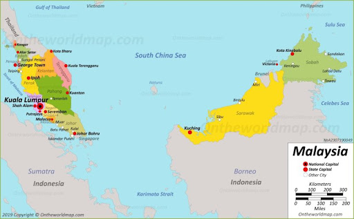
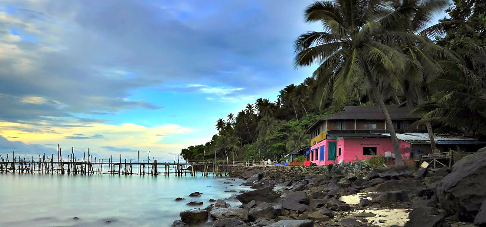

Malaysia

Thông tin cơ bản:
Khí hậu
Xung quanh hai phần của Malaysia là một số hòn đảo, lớn nhất trong số đó là đảo Banggi. Malaysia có khí hậu xích đạo, điểm đặc trưng là gió mùa tây nam (tháng 4 đến tháng 10) và gió mùa đông bắc (tháng 10 đến tháng 2). Các vùng biển xung quanh giúp điều hòa nhiệt độ cho Malaysia.Ẩm độ thường cao, và lượng mưa trung bình hàng năm là 250 cm (98 in). Khí hậu tại Bán đảo và Đông bộ khác biệt, thời tiết Bán đảo chịu ảnh hưởng trực tiếp từ gió thổi từ lục địa, trong khi Đông bộ có khí hậu mang tính hải dương hơn. Các khí hậu địa phương có thể phân thành: vùng cao, vùng thấp và vùng duyên hải. Biến đổi khí hậu có thể tác động đến mực nước biển và lượng mưa, tăng nguy cơ lũ lụt và dẫn đến hạn hán.
Sinh thái
Thương mại quốc tế của Malaysia có thuận lợi do nằm sát tuyến đường tàu thủy qua eo biển Malacca, và chế tạo là lĩnh vực then chốt.Malaysia là một nước xuất khẩu tài nguyên thiên nhiên và nông sản, dầu mỏ là mặt hàng xuất khẩu chính.Malaysia từng là nhà sản xuất lớn nhất các mặt hàng thiếc, cao su và dầu cọ trên thế giới. Lĩnh vực chế tạo có ảnh hưởng lớn trong kinh tế quốc gia, song cấu trúc kinh tế của Malaysia đang chuyển ra khỏi tình trạng này.[Malaysia vẫn là một trong các nhà sản xuất dầu cọ lớn nhất thế giới.
Chính phủ thúc đẩy sự gia tăng du lịch đến Malaysia trong một nỗ lực nhằm đa dạng hóa kinh tế và giảm sự phụ thuộc vào hàng xuất khẩu. Kết quả là du lịch trở thành nguồn thu ngoại tệ lớn thứ ba của Malaysia, song nó đang bị đe dọa do những tác động tiêu cực từ ngành công nghiệp đang phát triển, với một lượng lớn khí thải và nước thải cùng với nạn phá rừng. Từ năm 2013-2014, Malaysia được xếp là một trong những nơi tốt nhất để nghỉ hưu trên thế giới, đứng vị trí thứ 3 theo Chỉ số hưu trí toàn cầu. Đây là một trong những kết quả của chương trình "Malaysia My Second Home", theo đó người ngoại quốc được phép sống tại Malaysia theo một thị thực trường trú lâu đến 10 năm.